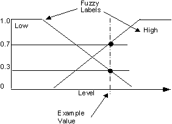

Fuzzy Logic Evaluation
The following topics describe standard fuzzy logic operations. The control provided by the Fuzzy Logic Control function block is based on the evaluation of the membership functions and rules described for the block algorithm.
Membership
Fuzzy logic provides a way to quantify states and the overlap between them (for example, High and Low), assigning degrees of membership (truth) to each one.
Membership Functions
Fuzzy logic uses mathematical functions to describe the degrees of membership in various states or conditions. One mathematical function describes each state. These states are called membership functions and are usually represented graphically as triangles that overlap.
Each membership function is given a fuzzy keyword or label that describes the process state. For example, the following figure shows two membership functions with these levels: Low and High. Note that input and output variables can have different sets of associated membership functions and labels.
Degree of Membership
Rather than require 100% membership in one state or the other, fuzzy logic allows for a tank's level to be somewhat high (70% membership) and somewhat low (30% membership) at the same time. In other words, a statement is typically true only to a certain extent or degree.

The degree of membership for a particular state is represented by a value that ranges from 0 to 1. For example, the degree of membership for High is 0.7 in the above graph, and its degree of membership for Low is 0.3.
Fuzzy Logic Reasoning Process
Fuzzy logic reasoning can be expressed using AND/OR operations, as defined in the following table.
The above table is suitable for fuzzy logic statements with all possible degrees of membership. In the case where the fuzzy logic statements are 100% true or false, the fuzzy logic operations produce the same result as binary logic (that is, 1 or 0 value, respectively). In all other cases, fuzzy logic operations generate continuous output values between 0 and 1.
Typical Fuzzy Logic Control Function Block
A typical FLC function block has three basic operations:
- Translation from input signals to fuzzy logic values or fuzzification.
- Rule inference based on input states.
- Retranslation of the fuzzy logic values to continuous signals or defuzzification.
For example, fuzzy logic can be used to control the level in a tank through a control valve based on inlet flow and tank level measurement, as shown in the following figure.
In this example, the membership function describing the tank's level and valve might be defined as follows.
For this example, the rules for controlling the tank level might be defined as follows.
| Number | Rule |
|
Rule 1 |
If level is Low and inlet flow is Normal, make outlet valve Closed. |
|
Rule 2 |
If level is High and inlet flow is Normal, make outlet valve Open. |
|
Rule 3 |
If level is High and inlet flow is Low, make outlet valve Normal. |
For this example, the fuzzy logic would be evaluated in the following manner to determine the outlet valve position based on the current value of the tank level and inlet flow.
Step 1 - Fuzzification/Translation
Calculate the degree of membership in each of the predefined membership functions (refer to the following figure).
Step 2 - Rule Inference
Apply the degree of membership for both level and inlet flow to the fuzzy rules for tank outlet flow as shown below:
Step 3 - Defuzzification
Calculate a weighted average of all of the activated output membership functions to determine the outlet valve position.